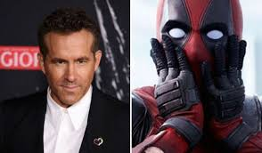

Deadpool, cuyo nombre real es Wade Wilson, apareció por primera vez en los cómics en 1991. Fue creado por Rob Liefeld y Fabian Nicieza para Marvel Comics.
Después de someterse a un experimento del programa Arma X, obtuvo un poderoso factor de regeneración que le permite recuperarse de casi cualquier herida. Como consecuencia, su cuerpo quedó gravemente desfigurado.
Actor: Ryan Reynolds
Tiene varias versiones la primera pelicula fue en 2016, luego salio la 2 en el 2018 y la ultima llamada "Deadpool & Wolverine" salio en el 2024. Esta historia fue basada en los comics de 1991
Deadpool & Wolverine (2024) ha hecho historia al superar los $1.300 millones de dólares en taquilla mundial, convirtiéndose en la película clasificada más taquillera de todos los tiempos. Con una recaudación total de más de $1.320 millones estimada hacia el final de su recorrido, la cinta superó a Joker.
Ryan Reynolds consiguió el papel de Deadpool gracias a su obsesión de 11 años por el personaje desde 2004, insistiendo constantemente a los estudios. Tras el fracaso de X-Men Origins: Wolverine, Reynolds impulsó la producción, y la filtración de una escena de prueba que enloqueció a los fans obligó a 20th Century Fox a aprobar la película.
La película "Deadpool & Wolverine" (2024) superó los 1.300 millones de dólares en taquilla mundial,
convirtiéndose en una de las películas clasificación R más exitosas de la historia.
Películas
Ryan Reynolds (Vancouver, 1976) es un destacado actor, productor y empresario canadiense, reconocido mundialmente por su papel como el irreverente superhéroe en la saga Deadpool (2016-2024), y comedias como Van Wilder y The Proposal. Comenzó su carrera en la serie juvenil Fifteen (1991) y consolidó su fama combinando carisma cómico con éxitos de taquilla, siendo uno de los actores mejor pagados.
Ha participado en numerosas películas de acción, comedia y romance, destacando por sus roles en Free Guy, Red Notice, The Adam Project, La Propuesta y Detective Pikachu. También tuvo papeles en películas de cómics como Linterna Verde (DC) y Blade Trinity.
Nacido el 23 de octubre de 1976 en Vancouver, Canadá, hijo de Tammy y Jim Reynolds. Comenzó a actuar a los 13 años, consiguiendo su primer papel importante en la serie de Nickelodeon Fifteen. Abandonó sus estudios superiores en Kwantlen College para dedicarse de lleno a la actuación, formando su propio grupo de improvisación, Yellow Snow. Tras varios papeles en televisión, su gran salto a la comedia llegó con Van Wilder: Animal Party (2002).